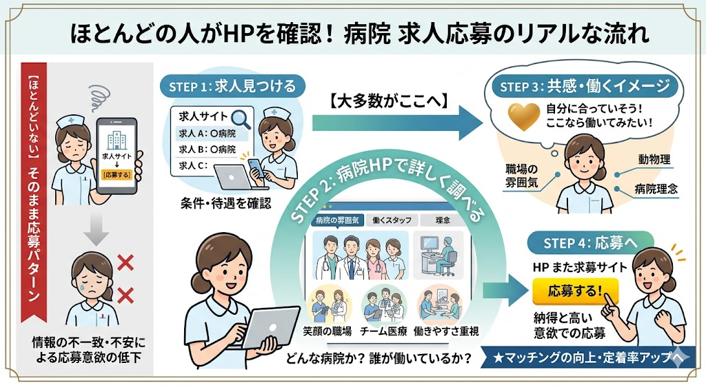

求職者のほとんどは、求人サイトで気になる求人を見つけた後、必ずそのクリニックのホームページを確認してから応募を決めます。「ここなら働いてみたい」と思ってもらえるHPと設計が、採用を変える最も確実な方法です。
「求人サイトに掲載すれば応募が来る」——実は、そう単純ではありません。求職者の行動を追うと、採用の「本当の勝負どころ」が見えてきます。

求職者がHPで確認するのは「院長はどんな人か」「スタッフの雰囲気はどうか」「本当に働きやすそうか」——テキストや写真だけでは伝えきれない情報です。
動画があるクリニックは、ここで圧倒的な差をつけることができます。
動画を見た求職者は、クリニックの雰囲気やスタッフの雰囲気、病院や院長先生の考えを理解して面接に来ることができるので、ミスマッチによる早期離職も予防することが可能です。
求人を出しているのに採用がうまくいかない——その原因のほとんどは、HPで「このクリニックで働きたい」と思ってもらえていないことです。
求職者がHPを訪れた瞬間に「ここで働きたい」と思ってもらうために、
採用専用ページと採用動画のふたつをセットでご提供します。
「採用情報」ページを、求職者の心を動かすページに整備します。求職者がHPを訪れた瞬間に「ここで働きたい」と思い、応募ボタンまで自然に導く導線を設計します。
院長の人柄・スタッフの雰囲気・1日の仕事の流れを映像で届けます。動画は24時間・365日、あなたの代わりに採用活動を続ける「採用担当者」です。
採用専用ページだけ・動画だけでも効果はあります。でも、ふたつが揃ったとき、求職者は「ここで働きたい」という確信を持って応募してきます。
医療スタッフが転職先を選ぶとき、何を見て何を感じて決断するのか——7年間の看護師経験が、その視点を動画制作と採用専用ページ設計に直結させます。
給与・休日だけでなく「院長の人柄」「スタッフ間の雰囲気」「どんな患者さんが多いか」——現場で転職を経験した立場から、響くポイントを押さえます。
「うちの良さをどう伝えればいいかわからない」という院長も多いです。ヒアリングを通じて院の強みを引き出し、求職者の心に刺さる言葉とビジュアルに変えます。
動画も採用専用ページも一人に任せられるため、メッセージの一貫性が保たれます。別々に発注するより、コストも制作期間も効率化できます。
患者さんに選ばれるクリニックは、スタッフにも選ばれます。患者向けブランディング動画と採用動画を同じ日に撮影することで、費用も時間も効率化できます。
以下に当てはまる方は、採用専用ページと採用動画の効果を特に実感していただけます。
開業と同時にスタッフの採用が必要。まだ知名度がない段階だからこそ、採用専用ページと動画で「どんなクリニックか」を先に発信することが重要です。
求人サイトに掲載しているのに応募が集まらない。HPに採用ページがない、あるいは情報が薄いことが原因かもしれません。
採用できても「思っていた職場と違う」で辞められてしまう。入職前に院の雰囲気を正しく伝えることで、ミスマッチを防ぎ定着率を改善します。
毎月の求人広告費を削減しつつ、応募の質を上げたい。一度の投資で長く使える採用専用ページと動画は、長期的にコストパフォーマンスの高い採用方法です。
採用の現状・どんな人材を採りたいか・現在のHPの課題をお聞きします。採用専用ページと動画、どちらから始めるべきかも一緒に考えます。
60分程度 / オンライン・訪問採用ターゲット・活用場所・予算に合わせて、採用専用ページの設計と動画の内容をご提案します。セットプランと単体プランをご説明した上でご選択いただきます。
1〜2週間院内・院長インタビュー・スタッフへの取材など、診療の合間や休診日に合わせて撮影します。採用専用ページ用の写真も同日に対応できます。
半日〜1日採用専用ページの制作と動画の編集を並行して進めます。初稿をそれぞれご確認いただき、修正を経て完成させます。
3〜4週間採用専用ページの公開と動画データの納品をサポートします。求人サイトへの動画掲載・SNS活用など、採用チャネル全体の整備もアドバイスします。
納品後フォローあり採用専用ページ・採用動画、どちらか一方でも、セットでも。
「今どんな状況か話したい」という段階からでも歓迎です。
熊本市内・合志・菊陽エリアは優先対応、遠方はオンラインでご対応します。
通常3営業日以内にご返信します